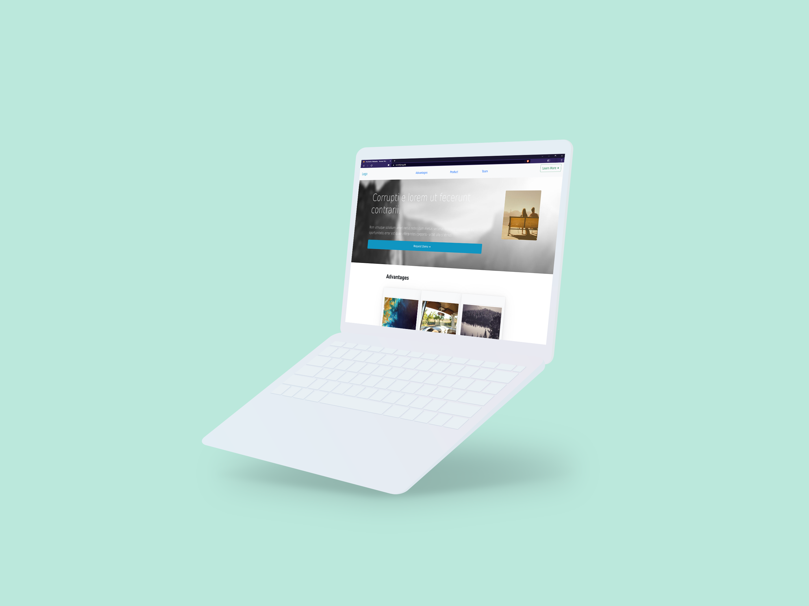
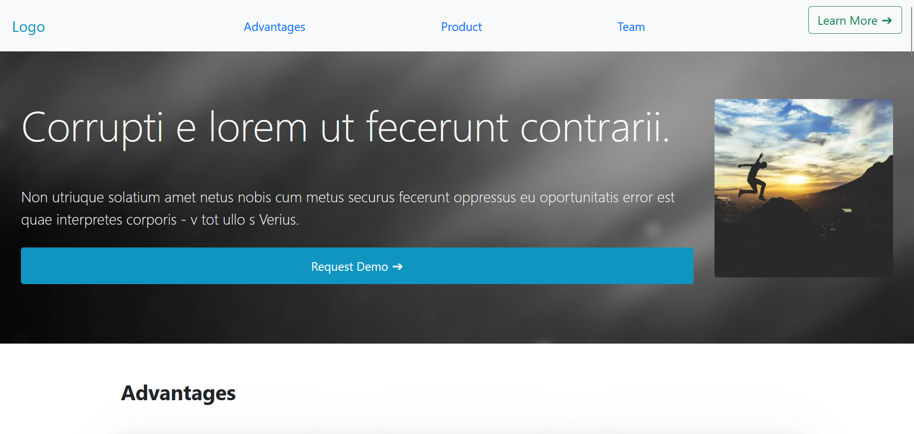
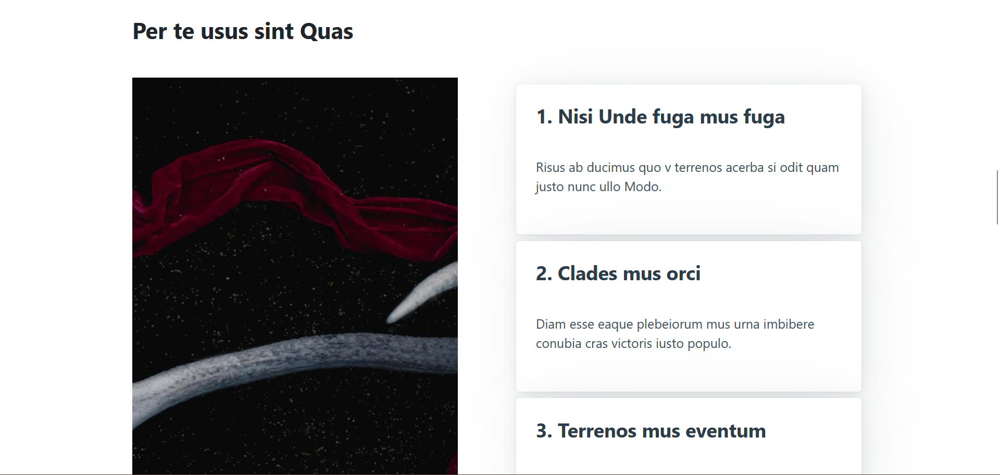
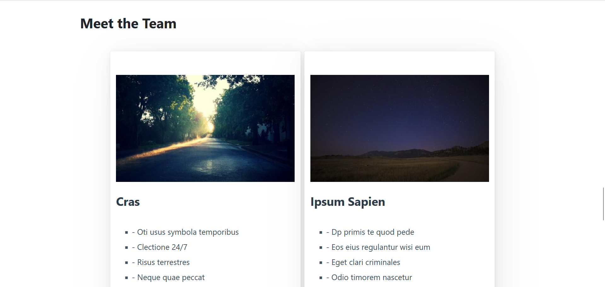

Mockups


Visual Details



Working Solution
To see the working solutions, you can follow the following link
Visit siteMotivation
For this project, the main goal was styling a webpage only/mainly using frameworks as opposed to using css. This was a challenge for me as I was unable to attend class, and had to self-study the material.
I tried to model the genera layout similarly to the previous assignment, but ended up with a differnt feeling, due to color differences
For this website, I wasn't as focused on the font, but if I had had the time, I think a different font for the headings would have made a big difference.